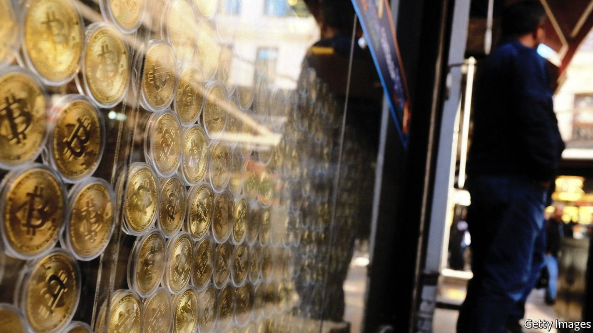
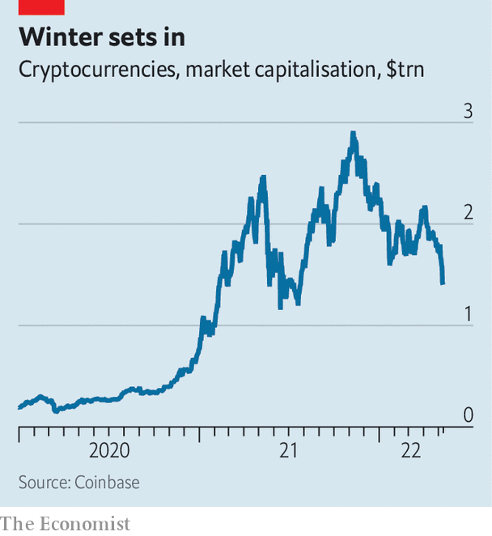
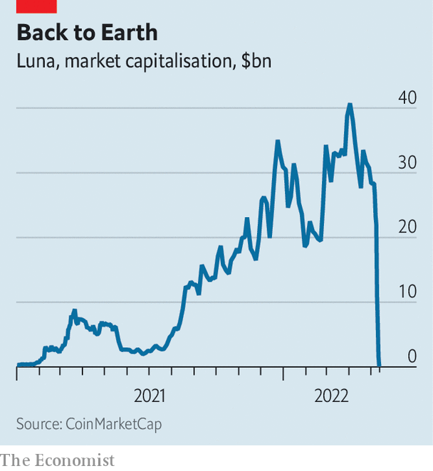

A vicious sell-off in risky assets jolts stablecoins

IT HAS BEEN a vicious year for financial markets, and more punishing still for crypto assets. More than half the market capitalisation of cryptocurrencies has been wiped out since November. On May 12th bitcoin traded at around $29,000, just 40% of its all-time high in November; ether has slumped by a similar amount. The share price of the leading crypto-industry stock, Coinbase, an exchange, is half what it was a week ago, falling 26% in a single day after it reported earnings and disclosed that users’ deposits on its platform were not necessarily protected in the event that the firm went bust. The sell-off comes at the same time as tech stocks, high-yield bonds and other risky assets have swooned as the Federal Reserve has begun raising interest rates.
Much of the technology (and the jargon) of the crypto-sphere is bewildering, still, to most people in traditional finance. Yet the dynamics of recent days bear the hallmarks of spectacular financial collapses of old. Take what has happened to stablecoins, a type of cryptocurrency that is pegged to another currency, sometimes a conventional one like the dollar. These are part of the plumbing of the crypto system: they act as a bridge between conventional banks, where people use dollars, and the “on-blockchain” world, where people use crypto. It is stablecoins’ interaction with traditional finance that has led regulators to fret about the impact they could have on financial stability.

Added together all stablecoins, the largest of which are tether and USD coin, operated by Circle, are worth around $170bn. Terra, a smaller stablecoin that had a market capitalisation of $18.7bn a week ago, has unravelled in recent days. Even tether’s peg came under pressure on May 12th. The events resemble the confidence crises that have preceded every bank run.
Every stablecoin has a mechanism to maintain its peg. The simplest (and safest) method is to hold a dollar in a bank account, or in safe, liquid assets like Treasury bills, for each stablecoin token. The token can be traded freely by buyers and sellers; when a seller wants to offload their stablecoin they can either sell it on the open market or redeem it for its dollar value from the issuer. USD coin uses this method.

Others, like terra, are called “algorithmic stablecoins” because they use an automated process to support the peg. But their main distinguishing feature is the way in which they are backed. Terra is backed with luna, a cryptocurrency issued by the same firm that issues terra. The theory was that holders of terra could always redeem it for one dollar’s worth of luna. A week ago, when luna was trading at $85 a piece, that meant a terra holder could redeem it for 0.0118 lunas. The process was managed by a smart contract—lines of code that execute automated transactions—that created more luna when a terra holder wanted to redeem. If for some reason terra was trading at less than $1 then arbitrageurs would swoop in, buy a terra, redeem it for luna and sell them for a profit.
That system worked well enough as long as luna had some market value. But on May 9th the price of luna began to slide. On May 10th it was worth around $30. The following day it fell to less than $1.50. At present it is trading at about 3 cents. As luna fell, people began to sell terra too—and arbitrageurs failed to swoop in to save the peg, by redeeming their terra for luna, instead staying away. The terra peg broke and by May 11th had dipped as low as 30 cents, before recovering to 40 cents.
It is unclear what will happen to terra now. Its market cap has sunk to $4.5bn. Its founders have supposedly propped it up by selling off some of the $3.5bn-worth of bitcoin they had in reserve, and are trying to come up with a new way to restore the peg. Its unravelling has had wider consequences. For one, the broken peg put pressure on other stablecoins, notably tether, the biggest, which briefly dipped to 95 cents on May 12th. That jeopardises the plumbing of the crypto system as a whole. The perception that these assets might not be stable will deter widespread adoption, and damage trust in them.
Perhaps reassuringly for the crypto universe, though, the flight from stablecoins has not been indiscriminate—just as in bank runs past, where depositors would flee the bad banks for the good. Holders have sold off terra and tether, which has previously been fined by New York’s Attorney General for misleading investors about the amount and quality of the assets backing its stablecoin. But they have seemingly bought tokens perceived to be of higher quality, like USD coin, which publishes regular audited reports on what backing it holds. The trouble with terra did not even upset the other major “algorithmic” stablecoin, dai.
Still, the failure of the terra-and-luna system does not come at an auspicious time. That the rout in cryptocurrency has troubled stablecoins—a core part of the crypto-financial plumbing—may augur ill for the resilience of the system writ large. And there are strains appearing in the traditional financial system. The stock and bond market routs have caused some risky issuers to delay planned debt sales, citing poor “market conditions”. Others could not attract investors even at double-digit yields. The era of free money in America has come to an end, and cracks are appearing in all kinds of financial markets.
For more expert analysis of the biggest stories in economics, business and markets, sign up to Money Talks, our weekly newsletter.